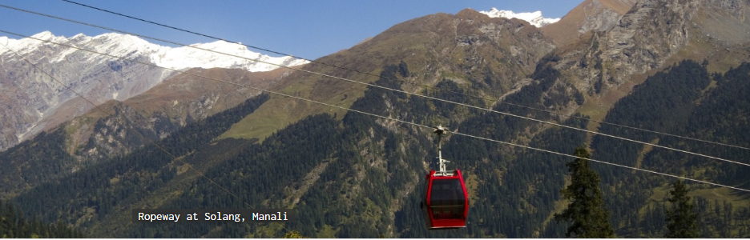
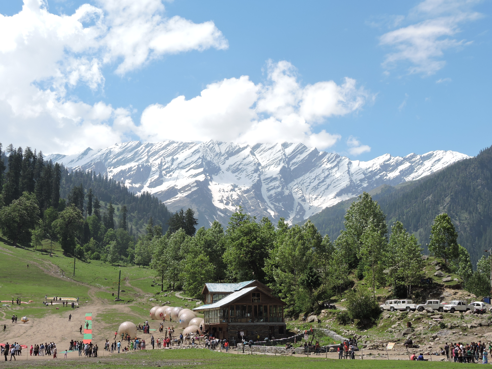
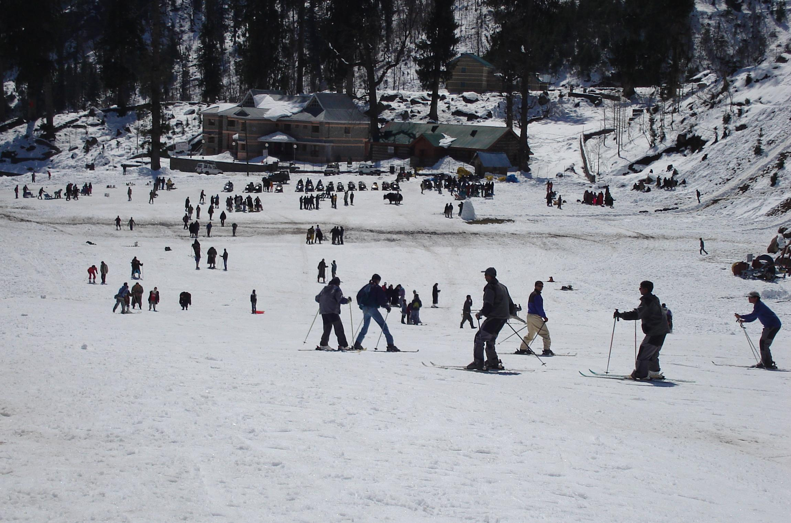
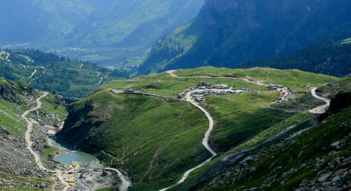
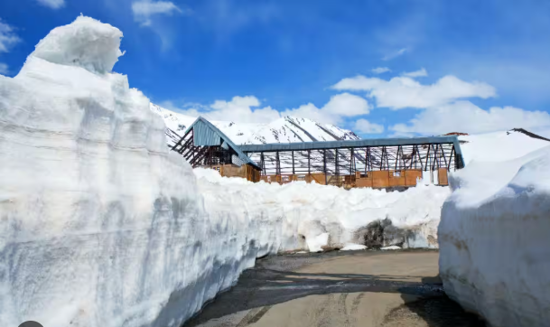
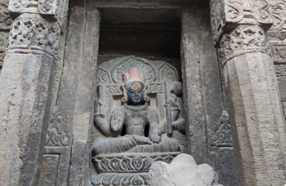
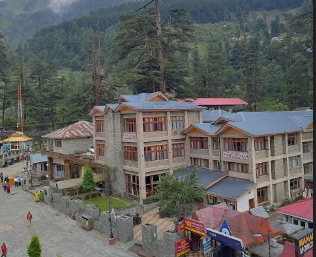
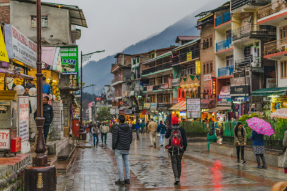
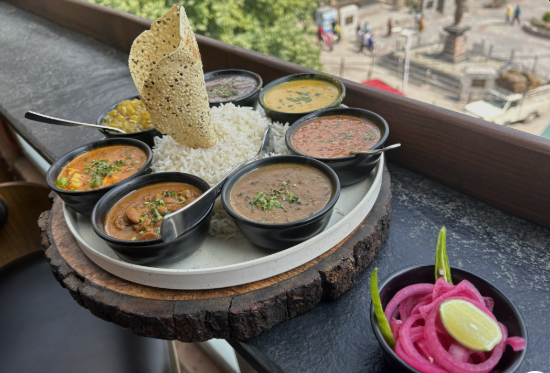
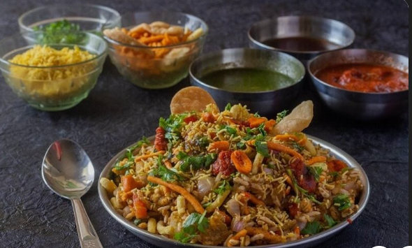

A gift of the Himalayas to the world, Manali is a beautiful township nestled in the picturesque Beas River valley. It is a rustic enclave known for its cool climate and snow-capped mountains,offering respite to tourists escaping scorching heat of the plains. The tourism industry in Manali started booming only in the early 20th century mainly because of its natural bounties and salubrious climate.
Solang Valley is famous for its beautiful mountain scenery and adventure activities. During winter, it is also known for snow-covered landscapes.


Rohtang Pass is a high mountain pass near Manali. It offers spectacular views of snow-covered mountains and is one of the major attractions in the region.


The Hadimba Temple is an ancient temple surrounded by tall cedar trees. Its unique wooden architecture makes it an interesting historical and cultural attraction.


Mall Road is a popular area for shopping, eating, and enjoying the local atmosphere. Visitors can find souvenirs, handicrafts, clothes, and local food.


*March-June: Pleasant weather and ideal for sightseeing.
*July-September: Monsoon season; rainfall can affect travel.
October-February: Cold weather and opportunities to experience snow.
Visitors can try Himachali dishes such as Dham, Siddu, Madra, and Babru. Local cafés and restaurants also offer North Indian and other cuisines.


*Carry warm clothes because temperatures can change quickly in the mountains.
*Check weather and road conditions before travelling, especially during heavy rain or snowfall. Keep the environment clean and avoid littering.
* Manali combines natural beauty, adventure, culture, and peaceful mountain scenery, making it an excellent destination for a memorable trip.